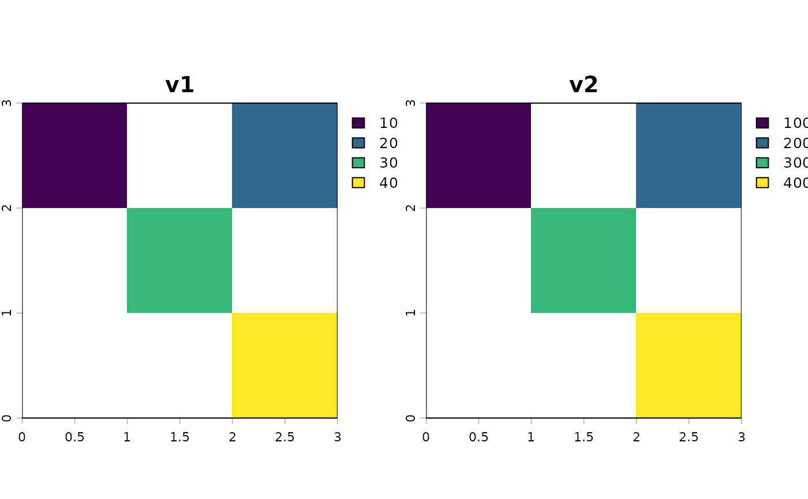

Efficiently constructs a multi-layer terra::SpatRaster from a
data.frame/data.table that contains one column of raster cell
identifiers and one or more columns of values. The function performs a
complete join against all cell indices in the template raster (so every cell
is present exactly once), fills missing cells with NA, and assigns all
layers in a single block write for speed.
rastFromDF(df, rasTemplate, cols = NULL, cellIDcol = NULL)A data.frame or data.table containing one column for raster
cell indices (name matching "pixel|cell"; e.g., cell, cellID,
pixelID) and one or more columns of values to become raster layers.
A terra::SpatRaster whose geometry (extent, resolution, rows/cols, CRS) defines the output grid.
NULL or a character vector of column names in df to use as
layers (order preserved). If NULL, the function uses all columns except
the detected cell/pixel ID column.
A single string with the column name of the cellID/pixelID.
Default is NULL, which will use the first column that matches a grep on "pixel|cell".
A terra::SpatRaster with one layer per selected value column.
Cells not present in df are filled with NA. The raster shares the
geometry of rasTemplate.
This function is designed as a fast "inverse" of terra::as.data.frame()
for rasters to be made from "sparse" data.frame/data.table objects with the
following workflow:
Identify the pixel/cell ID column in df by searching for a column name
that matches "pixel|cell" (e.g., "cell", "cellID", "pixelID").
Create a complete index of all cell numbers for rasTemplate using
terra::ncell() and join with df, so any non-provided cells become
NA.
Create a multi-layer raster with the same geometry as rasTemplate via
terra::rast(), one layer per value column, and write all values at once
using terra::values().
Notes and gotchas
The ID column must be a 1-based integer cell index consistent with
rasTemplate's grid.
If the input has duplicate cell IDs, the data.table join semantics will
replicate rows; the final terra::values() call expects exactly one row
per cell. Deduplicate beforehand if necessary.
The argument cols (a character vector) can be used to select a subset of
columns to create in the returned SpatVector.
The number of layers created equals the number of selected value columns. Layer names follow the column names.
library(terra)
library(data.table)
# Template raster (3x3 grid)
tmpl <- rast(nrows = 3, ncols = 3, xmin = 0, xmax = 3, ymin = 0, ymax = 3,
crs = "EPSG:4326")
# Sparse table: provide values for a subset of cells
df <- data.table(
cell = c(1L, 3L, 5L, 9L),
v1 = c(10, 20, 30, 40),
v2 = c(100, 200, 300, 400)
)
r <- rastFromDF(df, tmpl)
r
#> class : SpatRaster
#> size : 3, 3, 2 (nrow, ncol, nlyr)
#> resolution : 1, 1 (x, y)
#> extent : 0, 3, 0, 3 (xmin, xmax, ymin, ymax)
#> coord. ref. : lon/lat WGS 84 (EPSG:4326)
#> source(s) : memory
#> names : v1, v2
#> min values : 10, 100
#> max values : 40, 400
terra::plot(r) # remaining cells are NA
